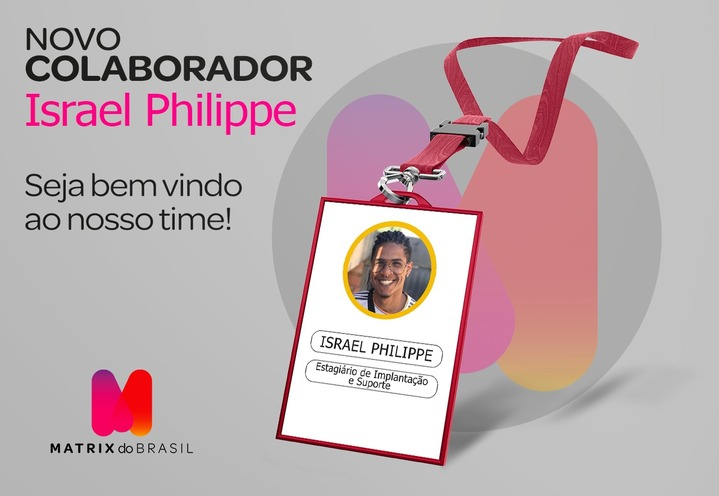

02 de Fevereiro de 2021
Inicio da minha carreira profissional
Na Dma distribuidora foi o início da minha carreira profissional,
trabalhei no Epa supermercados como repositor de mercadorias.
Era um serviço pesado, porém eu precisava comprar um computador para
estudar e não havia muitas opções de emprego para um jovem que não
havia concluído o ensino médio ainda, entrei lá com foco total em
ganhar dinheiro para adquirir um computador.
Quando eu estava no meu terceiro mês de empresa minha avó me emprestou
o cartão de crédito para que eu pudesse comprar meu computador
parcelado, fiquei muito feliz, pois foi a minha maior conquista nessa
época.
01 de maio de 2022
Chegada na Matrix do Brasil

Com 2 meses de faculdade consegui um estágio na Matrix do Brasil para
trabalhar com implantação de sistemas.
Foi um desafio muito grande no início, pois esse foi meu primeiro
contato trabalhando com sistemas antes disso só havia trabalhado de
forma braçal, não estava acostumado com um ambiente corporativo,
enviar e-mail’s, etc.
Fui muito bem acolhido na empresa, dei o meu melhor desde o primeiro
dia para mostrar meu valor e ser reconhecido futuramente.
15 de Maio de 2023
Hora de subir mais um degrau

Essa semana a oportunidade bateu na porta novamente, entrei no site da
Rocketseat para ver os cursos, pois já havia ouvido falar muito bem
desse time.
Eu sempre tive o sonho de ser um desenvolver full-stack,
então pensei em aprimorar meu Front-End depois o Back-End.
No site da
Rocketseat encontrei o Discover, com todos os temas que eu estava
procurando no momento para estudar, eu já havia feito outros cursos
variados em programação em PHP, programação em Python, programação em
JavasScript, porém eu sempre fui muito limitado não entedia bem o que
fazer com tudo aquilo que eu havia aprendido, não entendia bem como
funcionavam os frameworks e bibliotecas dentro das linguagens.
Então
mesmo já sabendo algumas coisas, decidi começar o Discover do básico
do e absoluto Zero e ainda, sim, aprendi e estou aprendendo bastante.
Decidi participar do NLW e me surpreendi muito com tudo que
aprendi com o Maky e com o Rodrigo sei que isso vai gerar frutos para
que eu consiga meu primeiro e tão sonhado emprego como Desenvolvedor.